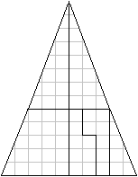
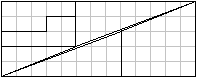
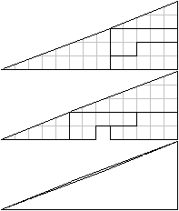

Geometric Vanish Activity
Materials Needed
- Paper
- Pencil
- Ruler
- Scissors
Concepts
This activity is mostly about math. It teaches about geometry and the Fibbonacci sequence.What to do
Start out by ruling the paper as shown. The gridlines are not necessary but the black lines are. As you can see, it is based on an 8x8 square. Therefore, its areas is 8 units x 8 units = 64 square units.

Proceed to cut out the shapes along the black lines and arrange them as shown below.
As you can see, they appear to form a triangle. Its base is 10 units wide and it is 13 units tall. Assuming that it's a triangle, it's area would be 13 units x 10 units divided by 2 = 65 units. We already found the area of the square to be 64 units, so what's going on?
Rearrange the shapes again as shown below.
As you can see, we have something odd in the middle. It looks as though the pieces are cut improperly. Don't worry about it, though- now matter how well you cut out the pieces, this will still happen! The area in the middle is a parallelogram with an area of one square unit- Combined with the area of the original square, this gives us an area of 65 square units.
Why does this happen?
The slope of the shapes are not all the same. Some of them have a slope of 2/5, or 0.4, while others have a slope of 3/8, or 3.75. Therefore, the "triangle" in the second picture is not actually a triangle- its slides are slightly indented, as seen in the third picture. Another example of this, known as a "geometric vanish", can be seen below.
More about how it works
Most of the sides of these figures have dimensions that are equal to a number from the Fibbonacci sequence. The Fibbonacci sequence starts with 0 and 1 and continues by finding the sum of the previous two numbers: 0, 1, 1, 2, 3, 5, 8, 13, 21, 34, 55, 89, 144, 233, 377, 610, 987, etc. This sequence of numbers has several special properties. One of them, which is relevant here, is that if you take 3 consecutive numbers from the Fibbonacci sequence- a, b, and c, you'll find that a times c equals b squared minus one. This means that geometric vanishes can be done with other lengths, too- as long as they're still numbers from the Fibbonacci sequence.
Golden Ratio
The golden ratio, phi, is a special number related to the Fibbonacci sequence. If you take a 1-by-phi rectangle and remove a square from it, you are left with a smaller 1-by-phi rectangle, as shown below. Note that the arcs form what is known as a Fibbonacci spiral.
Made using: Khan Academy Computer Science
Both the golden ratio and the Fibbonacci sequence can be found in nature. For instance, The arms of spiral galaxies are Fibbonacci spirals and Nautilus shells are shaped like Fibbonacci spirals as well.